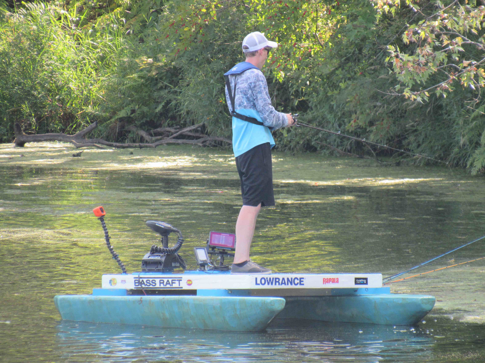
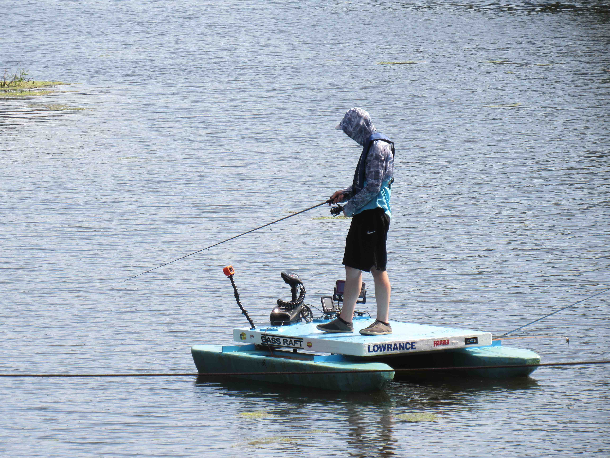

<br/>
<section class="page-section section-white">
  <div class="container-fluid">

    <div class="row justify-content-center">

      <div id="catalog-carousel" class="carousel slide">
        <div class="carousel-inner">
          <div class="carousel-item active">
            
          </div>
          <div class="carousel-item">
            
          </div>
        </div>
        <button class="carousel-control-prev" type="button" data-bs-target="#catalog-carousel" data-bs-slide="prev">
          <span class="carousel-control-prev-icon" aria-hidden="true"></span>
          <span class="visually-hidden">Previous</span>
        </button>
        <button class="carousel-control-next" type="button" data-bs-target="#catalog-carousel" data-bs-slide="next">
          <span class="carousel-control-next-icon" aria-hidden="true"></span>
          <span class="visually-hidden">Next</span>
        </button>
      </div>

    </div>
  </div>
</section>
<br/>


